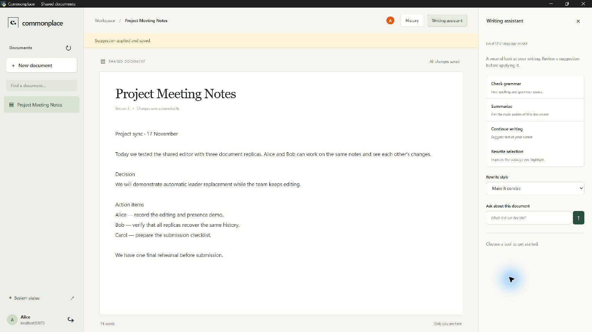

Sign in and edit
Open two clients with different accounts and choose the same document. Edits save automatically, and presence shows who is there.
CS G623 · ADVANCED OPERATING SYSTEMS · PROJECT C
Write in the same document, see your teammates' changes and return to every saved version. Three document replicas keep an agreed history through a server failure.
Python 3.11 · Windows desktop client · gRPC services

IN THE APP
Open two clients with different accounts and choose the same document. Edits save automatically, and presence shows who is there.
Check grammar, rewrite a selection, summarize notes or ask about the document. Review a suggestion before applying it as a saved edit.
See authors and versions in History. Open System status to identify the leader and watch replica progress during recovery.
RECOVERY CHECK
Eight clients completed 25 edits each while the elected leader was killed. The clients agreed, replaying history reproduced the final text, and the returning replica caught up.
The check also restarted all three voters on their original disks and retried an already committed operation. The documents and duplicate tracking survived.
Read the measured results →TRY IT LOCALLY
Download the repository and open Start Commonplace.cmd. The launcher installs the client dependencies and opens sign-in.
Set up real AI.cmd downloads the local CPU model. Before installation, the assistant clearly labels its responses as demo output.